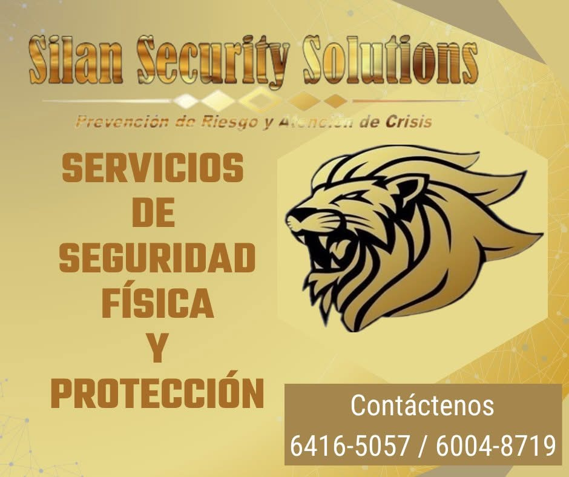
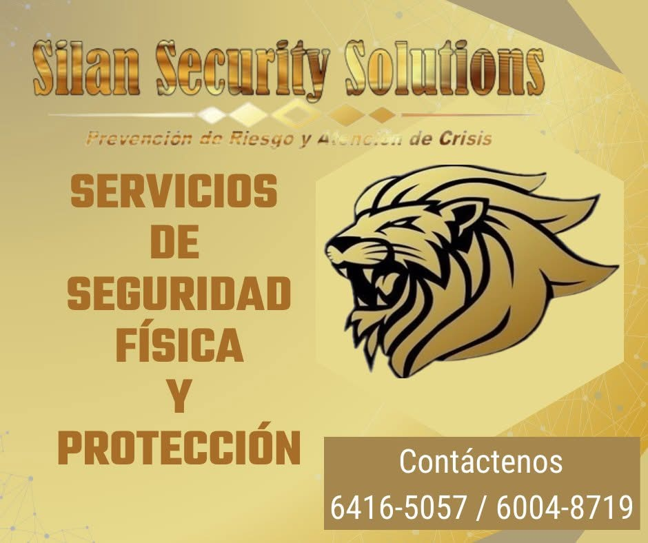

Silan Security Solutions S.R.L.
Silan Security Solutions S.R.L.
Silan Security Solutions S.R.L.
Silan Security Solutions S.R.L.
Oficiales capacitados, presencia disuasiva y protocolos claros para proteger tus instalaciones y eventos.

 

Prevención y reacción oportuna ante incidentes.
Oficiales uniformados y trato al público.
Protocolos que mantienen tu operación estable.
Informes periódicos y métricas del servicio.
Sí, ofrecemos cobertura por horas o días con reforzamiento según aforo.
Diseñamos y ajustamos protocolos según tu operación y riesgos.
Disponibles con puntos de control y reportes en tiempo real.
Cuéntanos ubicación, horarios y puntos críticos a cubrir.
Escribir a ventas Volver al inicio